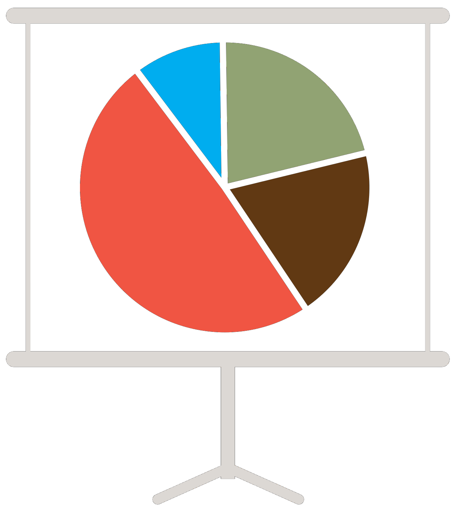

As a data scientist I tend to write simple code, using only the minimal amount of external packages required to complete the task. Most of my software is used internally in the labs I work for and is tailored for specific uses or data-sets, however I am a strong advocate for open source development.
My software is primarily written in R or Python, though occasional bash scripts and GNU Octave code are utilized for specific tasks. All of my documents are typeset with LATEX or R Markdown.
To download, clone, contribute to, comment on, or fork any of my public coding projects please visit my GitHub page.
Projects With Code Publicly Available Through GitHub
- My Personal Website:
- The branch Personal Website
is this webpage, which was built in Hugo, themed with LoveIt, pushed to GitHub, and hosted with Netlify.

- The branch Personal Website
is this webpage, which was built in Hugo, themed with LoveIt, pushed to GitHub, and hosted with Netlify.


“In House” Lab Coding Projects
- Flux Tower QA/QC:
- Ameriflux Data Pipeline:
- Analyzing Forest Diameter Distributions with Maximum Likelihood:

Freelance / Collaboration
I enjoy solving puzzles and I find coding/data science challenges to be exciting. If you are interested in collaboration or hiring me for a freelance project please feel free to contact me.
Previous projects include teaching R & RMarkdown, analyzing an upstart brewery’s brand ambassador program performance, web scraping for sports statistics, and using machine learning to predict future housing market changes.